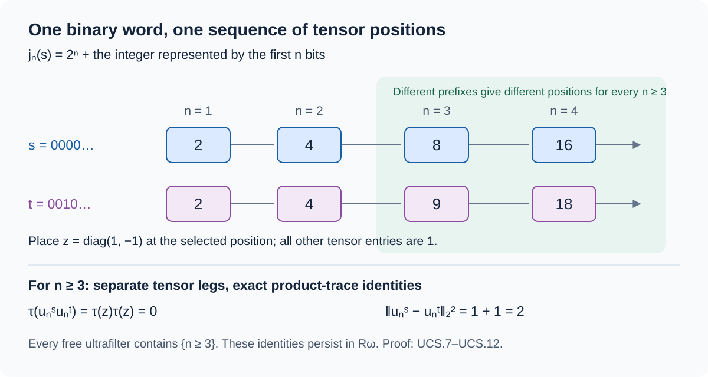

Dyadic subfactors and ultrafilter limits
Original exposition by OpenAI Codex, GPT-6 Astra, Ultra. New text and figure: CC0-1.0.
A countable tensor product can sit inside a factor with no separability assumption. Its tensor coordinates also supply enough central sequences to produce a nonseparable limiting algebra. The connection is explicit: finite matrix corners construct the tensor product, ultrafilters select its scalar limits, and binary words select mutually orthogonal elements in the limiting trace space.
We use the faithful normal trace and projection-comparison proofs in Balanced Kraus completion, Sections 04 and 07, the normal trace-GNS representation and expectations in Tracial actions and expectations, and the predual identification in Concrete preduals. The earlier central-sequence quotient construction supplies the finite von Neumann algebra and faithful normal trace used in Section 04. Each application below states its hypotheses.
A dyadic subfactor in every finite factor of type II
Theorem. Every factor \(M\) of type \(\mathrm{II}_1\) contains a unital von Neumann subalgebra normally isomorphic to
\[ R=\overline{\bigotimes_{j\ge1}}(M_2(\mathbb C),\operatorname{tr}_2). \]The ambient factor need not have separable predual or be approximately finite dimensional.
Proof. Let \(\tau\) be the normalized faithful normal trace of \(M\). The projection-cut argument in BKC-07 gives a subprojection of any prescribed trace between zero and \(\tau(e)\) in each projection \(e\). In particular, split \(1\) into two projections of trace \(1/2\). BKC-04 makes them equivalent. If \(v_i\) connects the first to the \(i\)-th, with \(v_1\) the first projection, then \(e_{ij}=v_iv_j^*\) are unital \(2\)-matrix units. Their span is our first algebra \(F_1\).
Here is the exact coordinate calculation needed to repeat this operation. For any unital matrix units \((e_{ij})_{i,j=1}^d\) in a von Neumann algebra \(P\), set \(e=e_{11}\). The maps
\[ \begin{split} P&\longrightarrow M_d(ePe),& x&\longmapsto[e_{1i}xe_{j1}]_{i,j},\\ M_d(ePe)&\longrightarrow P,& [a_{ij}]&\longmapsto\sum_{i,j}e_{i1}a_{ij}e_{1j} \end{split} \tag{UCS.1} \]are inverse normal star homomorphisms. For example, inserting \(\sum_k e_{kk}=1\) proves multiplicativity of the first map; the matrix-unit rules give both inverse identities. Each entry map and each finite sum is normal. Commutation with all the matrix units is equivalent to having a scalar diagonal matrix over \(ePe\). Thus their relative commutant is precisely
\[ C=\left\{\sum_{i=1}^d e_{i1}ae_{1i}:a\in ePe\right\}, \qquad P=F\vee C\cong M_d\bar\otimes ePe. \tag{UCS.2} \]When \(P=M\) is a \(\mathrm{II}_1\) factor, \(eMe\) is again such a factor. Indeed (UCS.1) identifies its center with the center of \(M\); a minimal projection in \(eMe\) would also be minimal in \(M\), since its corner is the same in both algebras. Finiteness passes to corners, and \(a\mapsto\tau(a)/\tau(e)\) is the normalized faithful normal trace there. Consequently \(C\) in (UCS.2) is a unital \(\mathrm{II}_1\) factor.
Inductively suppose \(F_n\cong M_{2^n}\) has been chosen. Apply the first halving construction inside \(C_n=F_n'\cap M\), whose identity is still \(1\). Its new \(M_2\) commutes with \(F_n\), and (UCS.1) shows that their product is a unital \(F_{n+1}\cong F_n\otimes M_2\). Choosing these identifications at each step gives compatible trace-preserving isomorphisms
\[ \bigotimes_{j=1}^n M_2\ \longrightarrow F_n, \qquad a\longmapsto a\otimes1 \quad\text{at the next stage.} \tag{UCS.3} \]Trace preservation follows from uniqueness of the normalized trace on each full matrix algebra; directly, a trace vanishes on off-diagonal matrix units and has value \(1/2^n\) on every diagonal unit.
Let \(N\subset M\) be the von Neumann algebra generated by \(\bigcup_nF_n\). The compatible map (UCS.3) is an isometry for the trace inner products. Its image is dense in \(L^2(N,\tau)\): Kaplansky density gives bounded strong approximants from the union, and the normal trace converts their strong-star convergence to trace \(2\)-norm convergence. It therefore extends to a unitary from the product trace-GNS space onto \(L^2(N,\tau)\). On the dense algebraic tensor union, this unitary intertwines left multiplication with left multiplication by its image. Taking von Neumann closures identifies \(R\) with the left trace representation of \(N\). That representation is faithful and normal, so the identification is a normal unital isomorphism \(R\cong N\subset M\). No countable density of \(M\) has been used. \(\square\)
For completeness, the tensor closure here is a factor. If \(z\in Z(R)\), the trace expectation of \(z\) onto each finite tensor stage commutes with that stage, hence equals \(\tau(z)1\). These expectations are orthogonal projections onto increasing dense trace-Hilbert subspaces, so they converge to \(z\) in trace \(2\)-norm. Thus \(z=\tau(z)1\). The algebra is finite by its faithful tracial representation and contains full matrices of arbitrarily large size, so this finite factor is of type \(\mathrm{II}_1\).
Ultrafilters are exactly the spectrum points
Write \(\Omega=\operatorname{Ch}(\ell^\infty(\mathbb N))\), with its topology of pointwise evaluation on bounded sequences. The commutative Gelfand theorem and Stone–Čech construction prove that this is the compact Hausdorff space \(\beta\mathbb N\). We prove the precise correspondence and its neighborhood assertion.
Theorem. Ultrafilters \(\mathcal U\) on \(\mathbb N\) correspond bijectively to characters by
\[ \chi_{\mathcal U}(a)=\lim_{n\to\mathcal U}a_n, \qquad \mathcal U_\chi=\{A\subset\mathbb N:\chi(1_A)=1\}. \tag{UCS.4} \]The principal ultrafilters correspond to evaluation at integers. The free ones correspond exactly to \(\beta\mathbb N\setminus\mathbb N\), or equivalently to characters vanishing on \(c_0(\mathbb N)\). For \(\omega=\chi_{\mathcal U}\),
\[ \mathcal U=\{V\cap\mathbb N:V\text{ is a neighborhood of }\omega\}, \qquad \{\omega\}=\bigcap_{A\in\mathcal U}\overline A^{\,\beta\mathbb N}. \tag{UCS.5} \]A neighborhood here may be any set containing an open neighborhood.
Proof. An ultrafilter is a proper filter that chooses exactly one of \(A,A^c\) for every subset \(A\). For a bounded complex sequence \(a\), the closed sets \(\overline{\{a_n:n\in A\}}\), \(A\in\mathcal U\), lie in a compact disk and have the finite intersection property. A common point \(z\) is an ultralimit: if the indices of any open neighborhood of \(z\) were not in \(\mathcal U\), its complement would be in the filter, and its closed value set would exclude \(z\). Disjoint neighborhoods show uniqueness. Intersecting the sets on which two sequences are close to their respective limits proves additivity and multiplicativity, using their uniform bounds for the product estimate. Conjugation passes through the limit and the constant one has limit one. Thus \(\chi_{\mathcal U}\) is a character and \(|\chi_{\mathcal U}(a)|\le\|a\|_\infty\).
Conversely, a nonzero character \(\chi\) has \(\chi(1)=1\). Since \(1_A\) is an idempotent, \(\chi(1_A)\) is zero or one. The identities
\[ 1_{A\cap B}=1_A1_B, \qquad 1_{A^c}=1-1_A \]give intersection closure and the complementary choice. If \(A\subset B\) and \(\chi(1_A)=1\), the equation \(1_A1_B=1_A\) gives \(\chi(1_B)=1\). The empty set has value zero. These are all the filter axioms.
Characters on this algebra are contractive without an extra continuity assumption. If \(|\lambda|>\|a\|_\infty\), then \(a-\lambda1\) has the bounded coordinatewise inverse \(((a_n-\lambda)^{-1})\), so \(\chi(a)\ne\lambda\). Hence \(|\chi(a)|\le\|a\|_\infty\). Approximate \(a\) uniformly by a finite-valued sequence \(b=\sum_{j=1}^m c_j1_{A_j}\), where the \(A_j\)'s partition \(\mathbb N\). Exactly one cell belongs to \(\mathcal U_\chi\), because their character values are zero or one and sum to one. Both \(\chi(b)\) and its \(\mathcal U_\chi\)-limit equal that cell's value. Uniform approximation proves \(\chi=\chi_{\mathcal U_\chi}\). The indicator sequences give the inverse identity in the other direction.
Set
\[ \widehat A=\{\chi:\chi(1_A)=1\}. \tag{UCS.6} \]These sets are clopen, and they form a neighborhood basis. To check the latter claim, start with a neighborhood specified by finitely many evaluations \(\chi(a^j)\). Approximate all \(a^j\)'s uniformly, to less than one third of their prescribed error, by finite-valued sequences on one common finite partition. The unique partition cell \(A\) selected by \(\chi\) has \(\chi\in\widehat A\), and every character in \(\widehat A\) has the same values on those approximants. Its original evaluations therefore differ from those of \(\chi\) by less than two thirds of the prescribed error. Thus \(\widehat A\) lies in the given neighborhood.
For integer evaluations, \(\widehat A\cap\mathbb N=A\). If \(\chi\in\widehat A\), every basic neighborhood \(\widehat B\) of \(\chi\) has \(A\cap B\in\mathcal U_\chi\), so that intersection contains an integer. Consequently \(\overline A=\widehat A\). Every neighborhood \(V\) of \(\chi_{\mathcal U}\) contains some \(\widehat A\) with \(A\in\mathcal U\); its trace \(V\cap\mathbb N\) then belongs to \(\mathcal U\) by upward closure. Conversely, each \(A\in\mathcal U\) is the trace of its clopen neighborhood \(\widehat A\). This proves the first formula in (UCS.5). A point belonging to all these closures has an ultrafilter containing \(\mathcal U\); the complementary-choice axiom makes it the same ultrafilter. Bijection (UCS.4) proves the singleton intersection.
If an ultrafilter contains a finite set, it selects a singleton in that finite partition and is principal. Otherwise it contains no finite set and contains every cofinite set. A free ultrafilter annihilates finitely supported sequences and hence their uniform closure \(c_0\). A principal evaluation does not annihilate its singleton indicator. This proves all the stated equivalences. Free ultrafilters exist: the cofinite filter is proper; the union of any chain of proper extensions is proper; a maximal proper extension is supplied by Zorn's lemma. If a subset A is absent from it, adjoining A cannot give a proper filter, so some existing filter member is disjoint from A; upward closure then puts the complement of A in the filter. Thus the maximal extension chooses one of every complementary pair. It cannot contain a finite set, since it already contains that set's complement. \(\square\)
Binary words in distant tensor coordinates
Use the product model \(R\) from Section 01, with normalized trace \(\tau\), and put
\[ z=\begin{pmatrix}1&0\\0&-1\end{pmatrix}\in M_2. \]For a binary sequence \(s=(s_1,s_2,\ldots)\in\{0,1\}^{\mathbb N}\), define
\[ j_n(s)=2^n+\sum_{k=1}^n s_k2^{n-k}, \qquad u_n^s=1\otimes\cdots\otimes z\otimes\cdots, \tag{UCS.7} \]where \(z\) occupies coordinate \(j_n(s)\). In particular \(j_n(s)\ge2^n\), and \(u_n^s\) is a selfadjoint unitary of trace zero.
Lemma. Each \((u_n^s)\) is an ordinary centralizing sequence:
\[ \|u_n^s\psi-\psi u_n^s\|\longrightarrow0 \qquad(\psi\in R_*). \tag{UCS.8} \]If \(s\ne t\), then for every sufficiently large \(n\),
\[ \tau(u_n^s u_n^t)=0, \qquad \|u_n^s-u_n^t\|_2^2=2. \tag{UCS.9} \]Proof. A fixed finite tensor stage is disjoint from coordinate \(j_n(s)\) for all sufficiently large \(n\), so its elements commute with \(u_n^s\). Given \(b\in R\), approximate its trace-Hilbert vector by \(b_0\) from such a stage. The tracial product bounds give
\[ \|[u_n^s,b]\|_2\le2\|b-b_0\|_2 \tag{UCS.10} \]once the supports are disjoint. This proves trace \(2\)-norm centrality for every fixed \(b\).
We check the stronger predual formulation explicitly. The normal functionals \(\psi_b(a)=\tau(ba)\), \(b\in R\), are norm dense in \(R_*\). If their linear span had proper norm closure, Hahn–Banach and the proved identification \((R_*)^*=R\) would give a nonzero \(x\in R\) with \(\tau(bx)=0\) for all \(b\). Taking \(b=x^*\) contradicts trace faithfulness. For \(\|a\|\le1\), traciality and Cauchy–Schwarz yield
\[ |(u_n^s\psi_b-\psi_bu_n^s)(a)| =|\tau((u_n^s b-bu_n^s)a)| \le\|[u_n^s,b]\|_2. \]For any normal \(\psi\), the difference between its commutator and that of \(\psi_b\) has norm at most \(2\|\psi-\psi_b\|\). First approximate \(\psi\), then apply (UCS.10). This proves (UCS.8), and therefore also centralization along every free ultrafilter.
If the first differing bit of \(s,t\) has index \(d\), their length-\(n\) binary prefixes are distinct for all \(n\ge d\). Thus \(j_n(s)\ne j_n(t)\). The two matrices then lie in different tensor coordinates, and the product trace gives \(\tau(u_n^s u_n^t)=\operatorname{tr}_2(z)^2=0\). Expanding the square of their difference gives \(2\). \(\square\)

A nonseparable central-sequence algebra
Fix any free ultrafilter \(\omega\). The earlier quotient construction forms
\[ C_\omega(R)=\{(x_n)\in\ell^\infty(\mathbb N,R): \|[x_n,\psi]\|\to_\omega0\text{ for every }\psi\in R_*\} \]and quotients by its bounded strongly-star-zero sequences. Its trace-GNS image \(R_\omega\) is a finite von Neumann algebra with faithful normal trace \(\tau_\omega\). On represented sequences,
\[ \tau_\omega([(x_n)])=\lim_\omega\tau(x_n), \qquad \|[(x_n)]\|_{2,\omega}^2=\lim_\omega\tau(x_n^*x_n). \tag{UCS.11} \]These are the trace and completeness conclusions of the quotient proof, used here for the separable factor \(R\).
Theorem. For every free ultrafilter, \((R_\omega)_*\) and \(L^2(R_\omega,\tau_\omega)\) are nonseparable, although \(R_*\) is separable.
Proof. Let \(U_s=[(u_n^s)]\). Section 03 places this sequence in \(C_\omega(R)\). Its exact coordinate identities give
\[ U_s=U_s^*,\qquad U_s^2=1,\qquad \tau_\omega(U_s)=0,\qquad \tau_\omega(U_sU_t)=0\quad(s\ne t). \tag{UCS.12} \]The last identity holds because it holds on a cofinite set of coordinates, which every free ultrafilter contains. Thus the vectors \(U_s\) form an orthonormal family indexed by all binary sequences. That index set is uncountable: from any proposed enumeration \(s^{(m)}\), the sequence with \(m\)-th bit \(1-s_m^{(m)}\) is absent. The open trace \(2\)-norm balls of radius \(1/3\) about these vectors are disjoint. A countable dense set in the Hilbert space would have to meet all of them, which is impossible.
The predual conclusion has a direct norm witness, without an inference from Hilbert-space cardinalities. Put
\[ P_s=\frac{1+U_s}{2},\qquad \rho_s(x)=2\tau_\omega(P_sx). \tag{UCS.13} \]Each \(P_s\) is a projection of trace \(1/2\). The functional \(\rho_s\) is normal and positive, since the trace law gives \(\tau_\omega(P_sx)=\tau_\omega(P_sxP_s)\), which is nonnegative for \(x\ge0\). Also \(\rho_s(1)=1\). Equations (UCS.12) give
\[ \rho_s(U_s)=1,\qquad \rho_t(U_s)=0\quad(t\ne s). \]As \(\|U_s\|=1\), we obtain \(\|\rho_s-\rho_t\|\ge1\). The disjoint radius-\(1/3\) balls about this uncountable family of normal states rule out a countable norm-dense subset of \((R_\omega)_*\).
Finally, \(R_*\) is separable. Its algebraic tensor union has a countable trace \(2\)-norm dense set, using matrices with rational real and imaginary coefficients at each finite stage. Hence \(L^2(R,\tau)\) is separable. The map \(b\mapsto\psi_b\) satisfies \(\|\psi_b\|\le\|b\|_2\), and its range is norm dense in \(R_*\) by Section 03. The image of a countable trace \(2\)-norm dense subset of the local algebra is therefore norm dense in \(R_*\). This proves the claimed contrast for the precise predual meaning of separability. \(\square\)
Exact example. Take \(s=0000\ldots\) and \(t=001000\ldots\). Their first four coordinate choices are respectively \(2,4,8,16\) and \(2,4,9,18\). The first two chosen unitaries agree. From the third coordinate onward their trace inner product is zero and their trace distance is \(\sqrt2\). An initial finite agreement disappears along every free ultrafilter; eventual distinction is what the proof uses.
Reading. Masamichi Takesaki, Theory of Operator Algebras III, Chapter XIV, §4, pp.115–118, motivates the dyadic embedding, the free-ultrafilter description and the possible nonseparability of a central-sequence algebra. The programme's finite-factor construction, Section 6 and Exercise 10 gives the compatible matrix embedding; Section 01 displays its coordinate and normal-extension steps. Sections 02–04 give the neighborhood correspondence and an explicit binary-tail example.